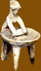
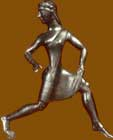

Daily Life
|  |
|
Life in ancient Greece was quite different for men and women. Whilst
men were expected to take an active part in the public life of their city,
women were expected to lead a private life as wives and mothers. Their
lives were centred on the home. |
Slavery was a central feature of life in Greece. Families of reasonable wealth would have slaves to carry out the household chores, to go shopping at the market and even to help bring up children.
| However, daily life in Sparta was rather different from most other city-states.
Here women led more active lives, as this would improve their physical
strength and their ability to have healthy babies. Sparta also had slaves
but these belonged to the city as a whole, rather than to individual families. |
|
 |
A lot of our information on daily life comes from pottery, and in particular from the scenes painted on pots to decorate them.

|
|
|
Find out about the lives of men and women from Athens and Sparta
|
Explore Greek pots to find out what they tell us about daily life
|
Play the 'Greek house' challenge
|

|
|